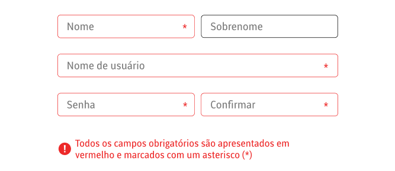
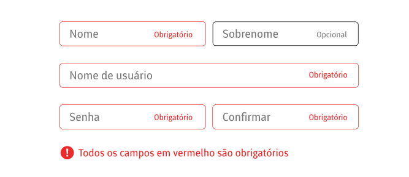

As informações, a estrutura, e os relacionamentos transmitidos através de apresentação podem ser determinados por meio de código de programação ou estão disponíveis no texto.
Nota
As informações, a estrutura, e os relacionamentos transmitidos através de apresentação podem ser determinados por meio de código de programação ou estão disponíveis no texto.
A intenção deste Critério de Sucesso é garantir que as informações e relacionamentos implícitos na formatação visual ou auditiva sejam preservados quando o formato da apresentação for alterado. Por exemplo, o formato da apresentação muda quando o conteúdo é lido por um leitor de tela ou quando uma folha de estilo do usuário é substituída pela folha de estilo fornecida pelo autor.
Os usuários com visão percebem a estrutura e os relacionamentos por meio de várias dicas visuais - os títulos costumam estar em uma fonte maior e em negrito, separados dos parágrafos por linhas em branco; os itens da lista são precedidos por um marcador e talvez recuados; os parágrafos são separados por uma linha em branco; os itens que compartilham uma característica comum são organizados em linhas e colunas tabulares; campos de formulário podem ser posicionados como grupos que compartilham rótulos de texto; uma cor de fundo diferente pode ser usada para indicar que vários itens estão relacionados entre si; as palavras que têm status especial são indicadas alterando a família da fonte e/ou colocando-as em negrito, itálico ou sublinhado; os itens que compartilham uma característica comum são organizados em uma tabela onde a relação das células que compartilham a mesma linha ou coluna e a relação de cada célula com sua linha e/ou cabeçalho da coluna são necessárias para o entendimento; e assim por diante. Ter essas estruturas e essas relações programaticamente determinadas ou disponíveis no texto garante que as informações importantes para a compreensão sejam perceptíveis a todos.
Sinais auditivos também podem ser usados. Por exemplo, um carrilhão pode indicar o início de uma nova seção; uma mudança no tom de voz ou velocidade da fala pode ser usada para enfatizar informações importantes ou para indicar o texto citado; etc.
Quando tais relacionamentos são perceptíveis para um conjunto de usuários, esses relacionamentos podem ser percebidos por todos. Um método para determinar se as informações foram ou não fornecidas adequadamente a todos os usuários é acessar as informações em série em diferentes modalidades. Se links para itens do glossário forem implementados usando elementos âncora (ou o elemento de link apropriado para a tecnologia em uso) e identificados usando uma face de fonte diferente, um usuário de leitor de tela ouvirá que o item é um link quando o termo do glossário for encontrado, mesmo que eles podem não receber informações sobre a alteração na face da fonte. Um catálogo on-line pode indicar preços usando uma fonte maior colorida em vermelho. Um leitor de tela ou pessoa que não consegue perceber o vermelho, ainda tem a informação sobre o preço desde que precedida pelo símbolo da moeda. Algumas tecnologias não fornecem um meio para determinar programaticamente alguns tipos de informações e relacionamentos. Nesse caso, deve haver uma descrição de texto das informações e relacionamentos. Por exemplo, "todos os campos obrigatórios estão marcados com um asterisco (*)". A descrição do texto deve estar próxima à informação que está descrevendo (quando a página é linearizada), como no elemento pai ou no elemento adjacente. Também pode haver casos em que pode ser um julgamento se os relacionamentos devem ser determinados programaticamente ou apresentados em texto. No entanto, quando as tecnologias oferecem suporte a relacionamentos programáticos, é altamente recomendável que as informações e os relacionamentos sejam determinados programaticamente, em vez de descritos em texto.
Observação
Não é necessário que os valores de cor sejam determinados programaticamente. A informação transmitida pela cor não pode ser adequadamente apresentada simplesmente pela exposição do valor. Portanto, o Critério de Sucesso 1.4.1 aborda o caso específico da cor, em vez do Critério de Sucesso 1.3.1.
Este Critério de Sucesso ajuda pessoas com diferentes deficiências, permitindo que os agentes do usuário adaptem o conteúdo de acordo com as necessidades de usuários individuais.
Os usuários cegos (usando um leitor de tela) se beneficiam quando as informações transmitidas por cores também estão disponíveis em texto (incluindo alternativas de texto para imagens que usam cores para transmitir informações).
Os usuários surdos-cegos que usam telas atualizáveis em braille (texto) podem não conseguir acessar informações dependentes de cores.
Um formulário contém vários campos obrigatórios. Os rótulos dos campos obrigatórios são exibidos em vermelho. Além disso, no final de cada rótulo há um caractere de asterisco, *. As instruções de preenchimento do formulário indicam que “todos os campos obrigatórios são apresentados a vermelho e marcados com um asterisco *”, seguido de um exemplo.
Um formulário contém vários campos obrigatórios. Os rótulos dos campos obrigatórios são exibidos em vermelho. Além disso, no final de cada rótulo há um caractere de asterisco, *. As instruções de preenchimento do formulário indicam que “todos os campos obrigatórios são apresentados a vermelho e marcados com um asterisco *”, seguido de um exemplo.
Um horário de ônibus consiste em uma tabela com os pontos de ônibus listados verticalmente na primeira coluna e os diferentes ônibus listados horizontalmente na primeira linha. Cada célula contém a hora em que o ônibus estará naquele ponto de ônibus. O ponto de ônibus e as células de ônibus são identificados como cabeçalhos para sua linha ou coluna correspondente, para que a tecnologia assistida possa determinar programaticamente qual ônibus e qual ponto de ônibus estão associados ao horário em cada célula.
Em um formulário, os rótulos de cada caixa de seleção podem ser determinados programaticamente pela tecnologia assistiva.
Um documento de texto simples é formatado com duas linhas em branco antes dos títulos, asteriscos para indicar itens de lista e outras convenções de formatação padrão para que sua estrutura possa ser determinada programaticamente.
Cada item numerado nesta seção representa uma técnica ou combinação de técnicas que o Grupo de Trabalho WCAG considera suficiente para atender a este Critério de Sucesso. No entanto, não é necessário usar essas técnicas específicas. Para obter informações sobre o uso de outras técnicas, consulte Compreendendo as técnicas dos critérios de sucesso WCAG, particularmente a seção "Outras técnicas".
Selecione a situação abaixo que corresponde ao seu conteúdo. Cada situação inclui técnicas ou combinações de técnicas que são conhecidas e documentadas como sendo suficientes para aquela situação.
Situação A: A tecnologia fornece estrutura semântica para tornar as informações e os relacionamentos transmitidos por meio da apresentação determináveis de forma programática:
ARIA11: Usando marcos ARIA para identificar regiões de uma página
ARIA12: Usando role=heading para identificar cabeçalhos
ARIA13: Usando aria-labelledby para nomear regiões e pontos de referência
ARIA16: Usando aria-labelledby para fornecer um nome para os controles da interface do usuário
ARIA17: Usando funções de agrupamento para identificar controles de formulário relacionados
ARIA20: Usando o papel da região para identificar uma região da página
G115: Usar elementos semânticos para marcar a estrutura E H49: Usar marcações semânticas para marcar texto especial ou enfatizado
G117: Usar texto para transmitir informações transmitidas por variações na apresentação do texto
G140: Separação de informações e estrutura da apresentação para possibilitar diferentes apresentações
ARIA24: identificando semanticamente um ícone de fonte com role="img"
Tornar as informações e os relacionamentos transmitidos por meio da apresentação determináveis de forma programática usando as seguintes técnicas:
• G138: Usar marcação semântica sempre que forem usadas sugestões de cores
• H51: Usando marcação de tabela para apresentar informações tabulares
• PDF6: Usando elementos de tabela para marcação de tabela em documentos PDF
• PDF20: Usando o Editor de tabelas do Adobe Acrobat Pro para reparar tabelas com erros de marcação
• H39: Uso de elementos de legenda para associar legendas de tabelas de dados a tabelas de dados
• H63: Uso do atributo scope para associar células de cabeçalho e células de dados em tabelas de dados
• H43: Uso dos atributos id e headers para associar células de dados com células de cabeçalho em tabelas de dados
• H44: Uso de elementos de rótulo para associar rótulos de texto a controles de formulário
• H65: Uso do atributo title para identificar controles de formulário quando o elemento label não pode ser utilizado
• PDF10: fornecendo rótulos para controles de formulário interativos em documentos PDF
• PDF12: fornecendo nome, função e informações de valor para campos de formulário em documentos PDF
• H71: Fornecer uma descrição para grupos de controles de formulário usando elementos fieldset e legend
• H85: Usando optgroup para agrupar elementos de opção dentro de um select
• H48: Usando ol, ul e dl para listas ou grupos de links
• H42: Usando h1-h6 para identificar cabeçalhos
• PDF9: Fornecer cabeçalhos marcando o conteúdo com tags de cabeçalho em documentos PDF
• SCR21: Usando funções do Document Object Model (DOM) para adicionar conteúdo a uma página
• PDF11: Fornecimento de links e texto de link usando a anotação Link e o elemento de estrutura /Link em documentos PDF
• PDF17: especificando numeração de página consistente para documentos PDF
• PDF21: Usando tags de lista para listas em documentos PDF
• H97: Agrupando links relacionados usando o elemento nav
As formas de se atingir os critérios de sucesso são diversas e variam de acordo com o contexto e as características do seu projeto. Para te ajudar durante o desenvolvimento das suas interfaces, selecione qual tipo de situação mais se adequa ao seu projeto.
Você poderá gerar uma documentação contendo todas as informações sobre as técnicas, de todos os critérios que você escolher implementar em suas telas, para te guiar com mais facilidade durante o andamento do projeto.
Para descrições que podem apresentar as mesmas informações que o conteúdo não textual e servir ao mesmo propósito.
Para descrições que não podem apresentar as mesmas informações que o conteúdo não textual e servir ao mesmo propósito.
Para conteúdo não textual que for um controle ou aceitar a entrada do usuário.
Para conteúdo não textual que for um controle ou aceitar a entrada do usuário.
Para conteúdo não textual que é CAPTCHA
Para conteúdos não textuais que devem ser ignoradas pelas tecnologias assistivas
A seguir estão erros comuns que são considerados falhas deste Critério de Sucesso pelo Grupo de Trabalho WCAG:
F2: Falha no Critério de Sucesso 1.3.1 devido ao uso de alterações na apresentação do texto para transmitir informações sem usar a marcação ou texto apropriado
F33: Falha do Critério de Sucesso 1.3.1 e 1.3.2 devido ao uso de caracteres de espaço em branco para criar várias colunas em conteúdo de texto simples
F34: Falha no Critério de Sucesso 1.3.1 e 1.3.2 devido ao uso de caracteres de espaço em branco para formatar tabelas em conteúdo de texto simples
F42: Falha nos Critérios de Sucesso 1.3.1, 2.1.1, 2.1.3 ou 4.1.2 ao emular links
F43: Falha no Critério de Sucesso 1.3.1 devido ao uso de marcação estrutural de uma forma que não representa relacionamentos no conteúdo
F46: Falha no Critério de Sucesso 1.3.1 devido ao uso de elementos, tabelas de layout
F48: Falha do Critério de Sucesso 1.3.1 devido ao uso do elemento pre para marcar informações tabulares
F87: Falha no Critério de Sucesso 1.3.1 devido à inserção de conteúdo não decorativo usando pseudoelementos ::before e ::after e a propriedade 'content' em CSS
F90: Falha no Critério de Sucesso 1.3.1 por associar incorretamente cabeçalhos e conteúdo da tabela por meio dos atributos headers e id
F91: Falha no Critério de Sucesso 1.3.1 por não marcar corretamente os cabeçalhos das tabelas
F92: Falha do Critério de Sucesso 1.3.1 devido ao uso de apresentação de função em conteúdo que transmite informações semânticas
Os recursos são apenas para fins informativos, sem endosso implícito:
• WebAIM: Estrutura Semântica
• Etiquetas de título
O conteúdo desta página foi originalmente desenvolvido pelos participantes do Grupo de Trabalho de Diretrizes de Acessibilidade (AG WG) como parte dos projetos WAI-Core financiados por fundos federais dos EUA.
A interface do usuário e a tradução livre do conteúdo foram feitas pelos alunos: Lucas Almeida, Mayara Viana, Milena Ferreira, Roberta Manfredini e Paulo Serpa, na disciplina de Acessibilidade Digital, ministrada pelo Prof. Dr. Edson Rufino de Souza